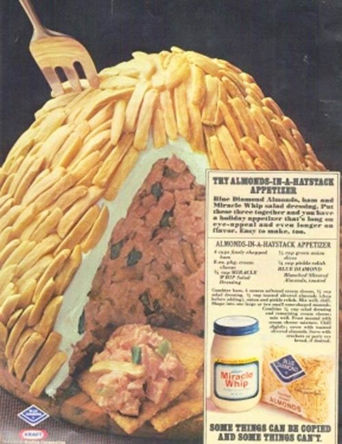

Almonds in a Haystack

Description
Almonds in a Haystack. At first glance you see almonds covering a white substance. I assumed it was Cool Whip
…almonds, sweetness, this can’t be bad. Then I realized it was Miracle Whip. Not even real mayonnaise. And
what was that bulk of stuff in the middle? It’s hard to read, but I have deduced what that all actually says:
Ingredients
- 4 c. finely chopped ham
- 8 oz. cream cheese
- 3/4 c. Miracle Whip
- 1/3 c. green onion slices
- 1/4 c. pickle relish
- Blue Diamond slivered almonds, toasted
Steps
- Combine ham, 4 oz. cream cheese, 1/2 cup salad dressing,
1/2 cup toasted slivered almonds (chopped before adding),
onion and pickle relish.
- Mix well and chill.
- Shape into 1 large or 2 small mounds.
- Combine 1/4 cup salad dressing and remaining cream cheese,
mix well.
- Frost mound with cream cheese mixture.
- Chill slightly; cover with toasted almonds.